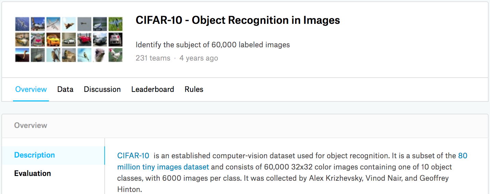

Phân Loại Ảnh (CIFAR-10) Trên Kaggle¶
Cho đến nay, chúng ta đã dùng các API cấp cao của framework deep learning để trực tiếp lấy các tập dữ liệu ảnh ở định dạng tensor. Tuy nhiên, các tập dữ liệu ảnh tùy chỉnh thường ở dạng các tệp ảnh. Trong mục này, chúng ta sẽ bắt đầu từ các tệp ảnh thô, rồi tổ chức, đọc, sau đó biến đổi chúng thành định dạng tensor từng bước một.
Chúng ta đã thử nghiệm với tập dữ liệu CIFAR-10 trong sec_image_augmentation, đây là một tập dữ liệu quan trọng trong thị giác máy tính. Trong mục này, chúng ta sẽ áp dụng kiến thức đã học trong các mục trước để thực hành cuộc thi Kaggle về phân loại ảnh CIFAR-10. (Địa chỉ web của cuộc thi là https://www.kaggle.com/c/cifar-10)
fig_kaggle_cifar10 hiển thị thông tin trên trang web của cuộc thi. Để nộp kết quả, bạn cần đăng ký một tài khoản Kaggle.

#@tab mxnet
import collections
from d2l import mxnet as d2l
import math
from mxnet import gluon, init, npx
from mxnet.gluon import nn
import os
import pandas as pd
import shutil
npx.set_np()
#@tab pytorch
import collections
from d2l import torch as d2l
import math
import torch
import torchvision
from torch import nn
import os
import pandas as pd
import shutil
Lấy và Tổ Chức Tập Dữ Liệu¶
Tập dữ liệu cuộc thi được chia thành tập huấn luyện và tập kiểm tra, lần lượt chứa 50000 và 300000 ảnh. Trong tập kiểm tra, 10000 ảnh sẽ được dùng để đánh giá, trong khi 290000 ảnh còn lại sẽ không được đánh giá: chúng chỉ được đưa vào để khiến việc gian lận bằng kết quả tập kiểm tra được gán nhãn thủ công trở nên khó hơn. Các ảnh trong tập dữ liệu này đều là tệp ảnh màu png (kênh RGB), có chiều cao và chiều rộng đều là 32 pixel. Các ảnh bao phủ tổng cộng 10 hạng mục, gồm máy bay, xe hơi, chim, mèo, hươu, chó, ếch, ngựa, thuyền, và xe tải. Góc trên bên trái của fig_kaggle_cifar10 cho thấy một số ảnh máy bay, xe hơi, và chim trong tập dữ liệu.
Tải Xuống Tập Dữ Liệu¶
Sau khi đăng nhập vào Kaggle, chúng ta có thể nhấp vào thẻ "Data" trên trang cuộc thi phân loại ảnh CIFAR-10 được hiển thị trong fig_kaggle_cifar10 và tải tập dữ liệu bằng cách nhấp vào nút "Download All".
Sau khi giải nén tệp đã tải xuống trong ../data, và giải nén train.7z cùng test.7z bên trong nó, bạn sẽ thấy toàn bộ tập dữ liệu trong các đường dẫn sau:
../data/cifar-10/train/[1-50000].png../data/cifar-10/test/[1-300000].png../data/cifar-10/trainLabels.csv../data/cifar-10/sampleSubmission.csv
trong đó các thư mục train và test lần lượt chứa ảnh huấn luyện và ảnh kiểm tra, trainLabels.csv cung cấp nhãn cho các ảnh huấn luyện, và sample_submission.csv là một tệp nộp mẫu.
Để bắt đầu dễ hơn, [chúng tôi cung cấp một mẫu quy mô nhỏ của tập dữ liệu
chứa 1000 ảnh huấn luyện đầu tiên và 5 ảnh kiểm tra ngẫu nhiên.]
Để dùng tập dữ liệu đầy đủ của cuộc thi Kaggle, bạn cần đặt biến demo sau thành False.
#@tab all
d2l.DATA_HUB['cifar10_tiny'] = (d2l.DATA_URL + 'kaggle_cifar10_tiny.zip',
'2068874e4b9a9f0fb07ebe0ad2b29754449ccacd')
# If you use the full dataset downloaded for the Kaggle competition, set
# `demo` to False
demo = True
if demo:
data_dir = d2l.download_extract('cifar10_tiny')
else:
data_dir = '../data/cifar-10/'
[Tổ Chức Tập Dữ Liệu]¶
Chúng ta cần tổ chức tập dữ liệu để thuận tiện cho huấn luyện và kiểm tra mô hình. Trước hết, hãy đọc các nhãn từ tệp csv. Hàm sau trả về một dictionary ánh xạ phần tên tệp không có phần mở rộng sang nhãn của nó.
#@tab all
def read_csv_labels(fname):
"""Read `fname` to return a filename to label dictionary."""
with open(fname, 'r') as f:
# Skip the file header line (column name)
lines = f.readlines()[1:]
tokens = [l.rstrip().split(',') for l in lines]
return dict(((name, label) for name, label in tokens))
labels = read_csv_labels(os.path.join(data_dir, 'trainLabels.csv'))
print('# training examples:', len(labels))
print('# classes:', len(set(labels.values())))
Tiếp theo, chúng ta định nghĩa hàm reorg_train_valid để [tách tập kiểm định ra khỏi tập huấn luyện ban đầu.]
Đối số valid_ratio trong hàm này là tỉ lệ giữa số ví dụ trong tập kiểm định và số ví dụ trong tập huấn luyện ban đầu.
Cụ thể hơn,
gọi \(n\) là số ảnh của lớp có ít ví dụ nhất, và \(r\) là tỉ lệ.
Tập kiểm định sẽ tách ra
\(\max(\lfloor nr\rfloor,1)\) ảnh cho mỗi lớp.
Hãy dùng valid_ratio=0.1 làm ví dụ. Vì tập huấn luyện ban đầu có 50000 ảnh,
sẽ có 45000 ảnh được dùng để huấn luyện trong đường dẫn train_valid_test/train,
trong khi 5000 ảnh còn lại sẽ được tách ra
làm tập kiểm định trong đường dẫn train_valid_test/valid. Sau khi tổ chức tập dữ liệu, các ảnh cùng lớp sẽ được đặt dưới cùng một thư mục.
#@tab all
def copyfile(filename, target_dir):
"""Copy a file into a target directory."""
os.makedirs(target_dir, exist_ok=True)
shutil.copy(filename, target_dir)
def reorg_train_valid(data_dir, labels, valid_ratio):
"""Split the validation set out of the original training set."""
# The number of examples of the class that has the fewest examples in the
# training dataset
n = collections.Counter(labels.values()).most_common()[-1][1]
# The number of examples per class for the validation set
n_valid_per_label = max(1, math.floor(n * valid_ratio))
label_count = {}
for train_file in os.listdir(os.path.join(data_dir, 'train')):
label = labels[train_file.split('.')[0]]
fname = os.path.join(data_dir, 'train', train_file)
copyfile(fname, os.path.join(data_dir, 'train_valid_test',
'train_valid', label))
if label not in label_count or label_count[label] < n_valid_per_label:
copyfile(fname, os.path.join(data_dir, 'train_valid_test',
'valid', label))
label_count[label] = label_count.get(label, 0) + 1
else:
copyfile(fname, os.path.join(data_dir, 'train_valid_test',
'train', label))
return n_valid_per_label
Hàm reorg_test bên dưới [tổ chức tập kiểm tra để tải dữ liệu trong khi dự đoán.]
#@tab all
def reorg_test(data_dir):
"""Organize the testing set for data loading during prediction."""
for test_file in os.listdir(os.path.join(data_dir, 'test')):
copyfile(os.path.join(data_dir, 'test', test_file),
os.path.join(data_dir, 'train_valid_test', 'test',
'unknown'))
Cuối cùng, chúng ta dùng một hàm để [gọi]
các hàm read_csv_labels, reorg_train_valid, và reorg_test (đã định nghĩa ở trên.)
#@tab all
def reorg_cifar10_data(data_dir, valid_ratio):
labels = read_csv_labels(os.path.join(data_dir, 'trainLabels.csv'))
reorg_train_valid(data_dir, labels, valid_ratio)
reorg_test(data_dir)
Ở đây chúng ta chỉ đặt kích thước batch là 32 cho mẫu quy mô nhỏ của tập dữ liệu.
Khi huấn luyện và kiểm tra
tập dữ liệu đầy đủ của cuộc thi Kaggle,
batch_size nên được đặt thành một số nguyên lớn hơn, chẳng hạn 128.
Chúng ta tách 10% ví dụ huấn luyện làm tập kiểm định để tinh chỉnh siêu tham số.
#@tab all
batch_size = 32 if demo else 128
valid_ratio = 0.1
reorg_cifar10_data(data_dir, valid_ratio)
[Tăng Cường Ảnh]¶
Chúng ta dùng tăng cường ảnh để xử lý quá khớp. Ví dụ, ảnh có thể được lật ngang ngẫu nhiên trong quá trình huấn luyện. Chúng ta cũng có thể chuẩn hóa ba kênh RGB của ảnh màu. Bên dưới liệt kê một số thao tác có thể tinh chỉnh.
#@tab mxnet
transform_train = gluon.data.vision.transforms.Compose([
# Scale the image up to a square of 40 pixels in both height and width
gluon.data.vision.transforms.Resize(40),
# Randomly crop a square image of 40 pixels in both height and width to
# produce a small square of 0.64 to 1 times the area of the original
# image, and then scale it to a square of 32 pixels in both height and
# width
gluon.data.vision.transforms.RandomResizedCrop(32, scale=(0.64, 1.0),
ratio=(1.0, 1.0)),
gluon.data.vision.transforms.RandomFlipLeftRight(),
gluon.data.vision.transforms.ToTensor(),
# Standardize each channel of the image
gluon.data.vision.transforms.Normalize([0.4914, 0.4822, 0.4465],
[0.2023, 0.1994, 0.2010])])
#@tab pytorch
transform_train = torchvision.transforms.Compose([
# Scale the image up to a square of 40 pixels in both height and width
torchvision.transforms.Resize(40),
# Randomly crop a square image of 40 pixels in both height and width to
# produce a small square of 0.64 to 1 times the area of the original
# image, and then scale it to a square of 32 pixels in both height and
# width
torchvision.transforms.RandomResizedCrop(32, scale=(0.64, 1.0),
ratio=(1.0, 1.0)),
torchvision.transforms.RandomHorizontalFlip(),
torchvision.transforms.ToTensor(),
# Standardize each channel of the image
torchvision.transforms.Normalize([0.4914, 0.4822, 0.4465],
[0.2023, 0.1994, 0.2010])])
Trong khi kiểm tra, chúng ta chỉ chuẩn hóa ảnh để loại bỏ tính ngẫu nhiên trong kết quả đánh giá.
#@tab mxnet
transform_test = gluon.data.vision.transforms.Compose([
gluon.data.vision.transforms.ToTensor(),
gluon.data.vision.transforms.Normalize([0.4914, 0.4822, 0.4465],
[0.2023, 0.1994, 0.2010])])
#@tab pytorch
transform_test = torchvision.transforms.Compose([
torchvision.transforms.ToTensor(),
torchvision.transforms.Normalize([0.4914, 0.4822, 0.4465],
[0.2023, 0.1994, 0.2010])])
Đọc Tập Dữ Liệu¶
Tiếp theo, chúng ta [đọc tập dữ liệu đã được tổ chức, gồm các tệp ảnh thô]. Mỗi ví dụ bao gồm một ảnh và một nhãn.
#@tab mxnet
train_ds, valid_ds, train_valid_ds, test_ds = [
gluon.data.vision.ImageFolderDataset(
os.path.join(data_dir, 'train_valid_test', folder))
for folder in ['train', 'valid', 'train_valid', 'test']]
#@tab pytorch
train_ds, train_valid_ds = [torchvision.datasets.ImageFolder(
os.path.join(data_dir, 'train_valid_test', folder),
transform=transform_train) for folder in ['train', 'train_valid']]
valid_ds, test_ds = [torchvision.datasets.ImageFolder(
os.path.join(data_dir, 'train_valid_test', folder),
transform=transform_test) for folder in ['valid', 'test']]
Trong khi huấn luyện, chúng ta cần [chỉ định tất cả các thao tác tăng cường ảnh đã định nghĩa ở trên]. Khi tập kiểm định được dùng để đánh giá mô hình trong quá trình tinh chỉnh siêu tham số, không nên đưa tính ngẫu nhiên từ tăng cường ảnh vào. Trước khi dự đoán cuối cùng, chúng ta huấn luyện mô hình trên tập huấn luyện và tập kiểm định gộp lại để tận dụng đầy đủ toàn bộ dữ liệu có nhãn.
#@tab mxnet
train_iter, train_valid_iter = [gluon.data.DataLoader(
dataset.transform_first(transform_train), batch_size, shuffle=True,
last_batch='discard') for dataset in (train_ds, train_valid_ds)]
valid_iter = gluon.data.DataLoader(
valid_ds.transform_first(transform_test), batch_size, shuffle=False,
last_batch='discard')
test_iter = gluon.data.DataLoader(
test_ds.transform_first(transform_test), batch_size, shuffle=False,
last_batch='keep')
#@tab pytorch
train_iter, train_valid_iter = [torch.utils.data.DataLoader(
dataset, batch_size, shuffle=True, drop_last=True)
for dataset in (train_ds, train_valid_ds)]
valid_iter = torch.utils.data.DataLoader(valid_ds, batch_size, shuffle=False,
drop_last=True)
test_iter = torch.utils.data.DataLoader(test_ds, batch_size, shuffle=False,
drop_last=False)
Định Nghĩa [Mô Hình]¶
#@tab mxnet
class Residual(nn.HybridBlock):
def __init__(self, num_channels, use_1x1conv=False, strides=1, **kwargs):
super(Residual, self).__init__(**kwargs)
self.conv1 = nn.Conv2D(num_channels, kernel_size=3, padding=1,
strides=strides)
self.conv2 = nn.Conv2D(num_channels, kernel_size=3, padding=1)
if use_1x1conv:
self.conv3 = nn.Conv2D(num_channels, kernel_size=1,
strides=strides)
else:
self.conv3 = None
self.bn1 = nn.BatchNorm()
self.bn2 = nn.BatchNorm()
def hybrid_forward(self, F, X):
Y = F.npx.relu(self.bn1(self.conv1(X)))
Y = self.bn2(self.conv2(Y))
if self.conv3:
X = self.conv3(X)
return F.npx.relu(Y + X)
#@tab mxnet
def resnet18(num_classes):
net = nn.HybridSequential()
net.add(nn.Conv2D(64, kernel_size=3, strides=1, padding=1),
nn.BatchNorm(), nn.Activation('relu'))
def resnet_block(num_channels, num_residuals, first_block=False):
blk = nn.HybridSequential()
for i in range(num_residuals):
if i == 0 and not first_block:
blk.add(Residual(num_channels, use_1x1conv=True, strides=2))
else:
blk.add(Residual(num_channels))
return blk
net.add(resnet_block(64, 2, first_block=True),
resnet_block(128, 2),
resnet_block(256, 2),
resnet_block(512, 2))
net.add(nn.GlobalAvgPool2D(), nn.Dense(num_classes))
return net
Chúng ta định nghĩa mô hình ResNet-18 đã mô tả trong sec_resnet.
#@tab mxnet
def get_net(devices):
num_classes = 10
net = resnet18(num_classes)
net.initialize(ctx=devices, init=init.Xavier())
return net
loss = gluon.loss.SoftmaxCrossEntropyLoss()
#@tab pytorch
def get_net():
num_classes = 10
net = d2l.resnet18(num_classes, 3)
return net
loss = nn.CrossEntropyLoss(reduction="none")
Định Nghĩa [Hàm Huấn Luyện]¶
Chúng ta sẽ chọn mô hình và tinh chỉnh siêu tham số theo hiệu năng của mô hình trên tập kiểm định.
Sau đây, chúng ta định nghĩa hàm huấn luyện mô hình train.
#@tab mxnet
def train(net, train_iter, valid_iter, num_epochs, lr, wd, devices, lr_period,
lr_decay):
trainer = gluon.Trainer(net.collect_params(), 'sgd',
{'learning_rate': lr, 'momentum': 0.9, 'wd': wd})
num_batches, timer = len(train_iter), d2l.Timer()
legend = ['train loss', 'train acc']
if valid_iter is not None:
legend.append('valid acc')
animator = d2l.Animator(xlabel='epoch', xlim=[1, num_epochs],
legend=legend)
for epoch in range(num_epochs):
metric = d2l.Accumulator(3)
if epoch > 0 and epoch % lr_period == 0:
trainer.set_learning_rate(trainer.learning_rate * lr_decay)
for i, (features, labels) in enumerate(train_iter):
timer.start()
l, acc = d2l.train_batch_ch13(
net, features, labels.astype('float32'), loss, trainer,
devices, d2l.split_batch)
metric.add(l, acc, labels.shape[0])
timer.stop()
if (i + 1) % (num_batches // 5) == 0 or i == num_batches - 1:
animator.add(epoch + (i + 1) / num_batches,
(metric[0] / metric[2], metric[1] / metric[2],
None))
if valid_iter is not None:
valid_acc = d2l.evaluate_accuracy_gpus(net, valid_iter,
d2l.split_batch)
animator.add(epoch + 1, (None, None, valid_acc))
measures = (f'train loss {metric[0] / metric[2]:.3f}, '
f'train acc {metric[1] / metric[2]:.3f}')
if valid_iter is not None:
measures += f', valid acc {valid_acc:.3f}'
print(measures + f'\n{metric[2] * num_epochs / timer.sum():.1f}'
f' examples/sec on {str(devices)}')
#@tab pytorch
def train(net, train_iter, valid_iter, num_epochs, lr, wd, devices, lr_period,
lr_decay):
trainer = torch.optim.SGD(net.parameters(), lr=lr, momentum=0.9,
weight_decay=wd)
scheduler = torch.optim.lr_scheduler.StepLR(trainer, lr_period, lr_decay)
num_batches, timer = len(train_iter), d2l.Timer()
legend = ['train loss', 'train acc']
if valid_iter is not None:
legend.append('valid acc')
animator = d2l.Animator(xlabel='epoch', xlim=[1, num_epochs],
legend=legend)
net = nn.DataParallel(net, device_ids=devices).to(devices[0])
for epoch in range(num_epochs):
net.train()
metric = d2l.Accumulator(3)
for i, (features, labels) in enumerate(train_iter):
timer.start()
l, acc = d2l.train_batch_ch13(net, features, labels,
loss, trainer, devices)
metric.add(l, acc, labels.shape[0])
timer.stop()
if (i + 1) % (num_batches // 5) == 0 or i == num_batches - 1:
animator.add(epoch + (i + 1) / num_batches,
(metric[0] / metric[2], metric[1] / metric[2],
None))
if valid_iter is not None:
valid_acc = d2l.evaluate_accuracy_gpu(net, valid_iter)
animator.add(epoch + 1, (None, None, valid_acc))
scheduler.step()
measures = (f'train loss {metric[0] / metric[2]:.3f}, '
f'train acc {metric[1] / metric[2]:.3f}')
if valid_iter is not None:
measures += f', valid acc {valid_acc:.3f}'
print(measures + f'\n{metric[2] * num_epochs / timer.sum():.1f}'
f' examples/sec on {str(devices)}')
[Huấn Luyện và Kiểm Định Mô Hình]¶
Bây giờ, chúng ta có thể huấn luyện và kiểm định mô hình.
Tất cả siêu tham số sau đều có thể được tinh chỉnh.
Ví dụ, chúng ta có thể tăng số epoch.
Khi lr_period và lr_decay lần lượt được đặt là 4 và 0.9, learning rate của thuật toán tối ưu sẽ được nhân với 0.9 sau mỗi 4 epoch. Chỉ để dễ minh họa,
ở đây chúng ta chỉ huấn luyện 20 epoch.
#@tab mxnet
devices, num_epochs, lr, wd = d2l.try_all_gpus(), 20, 0.02, 5e-4
lr_period, lr_decay, net = 4, 0.9, get_net(devices)
net.hybridize()
train(net, train_iter, valid_iter, num_epochs, lr, wd, devices, lr_period,
lr_decay)
#@tab pytorch
devices, num_epochs, lr, wd = d2l.try_all_gpus(), 20, 2e-4, 5e-4
lr_period, lr_decay, net = 4, 0.9, get_net()
net(next(iter(train_iter))[0])
train(net, train_iter, valid_iter, num_epochs, lr, wd, devices, lr_period,
lr_decay)
[Phân Loại Tập Kiểm Tra] và Nộp Kết Quả Trên Kaggle¶
Sau khi thu được một mô hình hứa hẹn với các siêu tham số, chúng ta dùng toàn bộ dữ liệu có nhãn (bao gồm tập kiểm định) để huấn luyện lại mô hình và phân loại tập kiểm tra.
#@tab mxnet
net, preds = get_net(devices), []
net.hybridize()
train(net, train_valid_iter, None, num_epochs, lr, wd, devices, lr_period,
lr_decay)
for X, _ in test_iter:
y_hat = net(X.as_in_ctx(devices[0]))
preds.extend(y_hat.argmax(axis=1).astype(int).asnumpy())
sorted_ids = list(range(1, len(test_ds) + 1))
sorted_ids.sort(key=lambda x: str(x))
df = pd.DataFrame({'id': sorted_ids, 'label': preds})
df['label'] = df['label'].apply(lambda x: train_valid_ds.synsets[x])
df.to_csv('submission.csv', index=False)
#@tab pytorch
net, preds = get_net(), []
net(next(iter(train_valid_iter))[0])
train(net, train_valid_iter, None, num_epochs, lr, wd, devices, lr_period,
lr_decay)
for X, _ in test_iter:
y_hat = net(X.to(devices[0]))
preds.extend(y_hat.argmax(dim=1).type(torch.int32).cpu().numpy())
sorted_ids = list(range(1, len(test_ds) + 1))
sorted_ids.sort(key=lambda x: str(x))
df = pd.DataFrame({'id': sorted_ids, 'label': preds})
df['label'] = df['label'].apply(lambda x: train_valid_ds.classes[x])
df.to_csv('submission.csv', index=False)
Đoạn code trên
sẽ tạo ra một tệp submission.csv,
với định dạng
đáp ứng yêu cầu của cuộc thi Kaggle.
Phương pháp
nộp kết quả lên Kaggle
tương tự như trong sec_kaggle_house.
Tóm Tắt¶
-
Chúng ta có thể đọc các tập dữ liệu chứa tệp ảnh thô sau khi tổ chức chúng theo định dạng yêu cầu.
-
Chúng ta có thể dùng mạng nơ-ron tích chập và tăng cường ảnh trong một cuộc thi phân loại ảnh.
Bài Tập¶
- Dùng tập dữ liệu CIFAR-10 đầy đủ cho cuộc thi Kaggle này. Đặt các siêu tham số là
batch_size = 128,num_epochs = 100,lr = 0.1,lr_period = 50, vàlr_decay = 0.1. Hãy xem bạn có thể đạt độ chính xác và thứ hạng nào trong cuộc thi này. Bạn có thể cải thiện thêm chúng không? - Bạn đạt độ chính xác nào khi không dùng tăng cường ảnh?